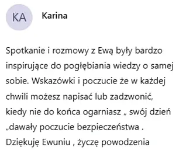
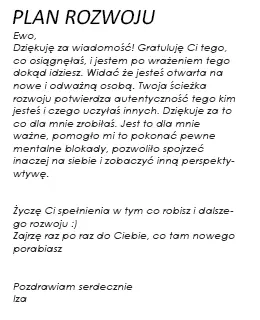
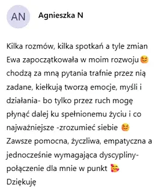
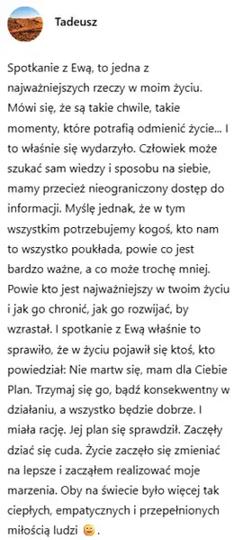
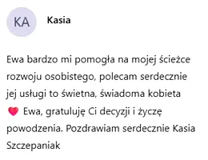
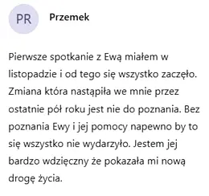
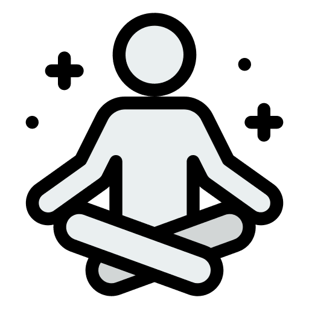
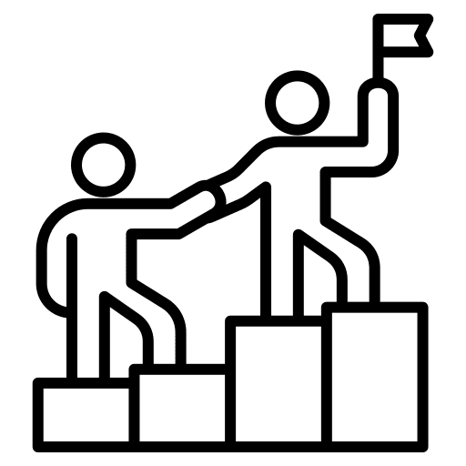

Gdyby tak przestać
się martwić i
żyć pełnią życia?
Jestem Ewa, pasjonuje mnie pomaganie ludziom, którzy mają wyzwania lub szukają nowego kierunku. Wspólnie odkrywamy, co naprawdę jest ważne i przygotowujemy Cię do tego, na czym najbardziej Ci zależy.
Porozmawiamy 30 minut – bez zobowiązań, bez presji.
Dla kogo pracuję?
Pracuję z osobami, które czują się przeciążone, zestresowane lub wypalone. Pomagam odzyskać spokój, kontakt z ciałem i poczucie wewnętrznej równowagi.
Czy to o Tobie?
- Czujesz się przytłoczony/-a codziennymi obowiązkami i brakiem czasu dla siebie
- Tracisz kontakt ze sobą, swoimi emocjami i tym, co naprawdę jest ważne
- Chcesz odzyskać spokój, kontakt ze swoim ciałem i wewnętrzną równowagę
- Pragniesz rozwijać się emocjonalnie, mentalnie i duchowo – ale nie wiesz, od czego zacząć
Brzmi znajomo?
Zobacz, czym się kierujęMoja misja
Moja misja to pomóc ludziom odzyskać wewnętrzny spokój i żyć autentycznie – bez ciągłego napięcia i chaosu. Każdy zasługuje na życie w zgodzie z sobą.
Wartości, którymi się kieruję
Transformacja
Uważność
Autentyczność
Zaufanie
Wsparcie
Kim jestem?
Jestem:
- Certyfikowaną trenerką odporności psychicznej MTQ i MTQ+
- Licencjonowaną trenerką oddechu transformacyjnego 9D
- Trenerką biznesu i mentorką rozwoju osobistego
- Mamą Klaudii z Aspergerem
- Prezesem Fundacji EmpowerMind
Zespół Aspergera to nie zaburzenie, które trzeba „naprawić", ale inny sposób odbierania świata. Moja córka Klaudia uczy mnie codziennie, że wrażliwość, logika i głębokość przeżywania mogą iść w parze. Potrzebuje zrozumienia, nie poprawiania. Obecności – nie osądu.
Dlaczego naprawdę rozumiem Twoją sytuację
Co sprawiło, że zaczęłam pracę z ludźmi?
Wiem, jak wygląda życie w ciągłym biegu – presja, odpowiedzialność, brak spokoju i oddechu. Kiedy nauczyłam się oddychać świadomie, napięcie zaczęło puszczać. Dziś pomagam innym złapać ten pierwszy, spokojniejszy oddech.
Czy też tak masz?
Życie w biegu
Ciągły pęd, wysoka odpowiedzialność i napięcie, którego nie da się wyłączyć po pracy.
Co było dalej?
Moment zwrotny
Świadomy oddech stał się dla mnie przełomem – pierwszym realnym krokiem w stronę spokoju.
Co to znaczy dla Ciebie?
Pierwszy oddech
Prowadzę Cię tą drogą krok po kroku, w bezpiecznej i życzliwej przestrzeni, żebyś mogła poczuć ulgę w ciele i głowie.
Jeśli widzisz w tym kawałek siebie, ta współpraca pomoże Ci przejść tę drogę spokojniej i z większą świadomością.
Opinie osób, które ze mną pracowały






Dlaczego warto mi zaufać?
10+ lat doświadczenia
Pomagam ludziom przechodzić przez ważne życiowe zmiany – zarówno osobiste, jak i zawodowe.
Holistyczne podejście
Łączę ciało, umysł i oddech w procesie budowania odporności psychicznej i emocjonalnej.
Atmosfera zaufania
Pracuję bez oceniania. Z empatią, uważnością i pełnym zrozumieniem Twojej historii.
Co realnie zmieniło się u moich klientów
Jak pracuję?
Wybierz ścieżkę, która najlepiej pasuje do tego, czego teraz najbardziej potrzebujesz.

Oddech 9D
Głębokie sesje z oddechem i dźwiękiem. Dla osób, które chcą puścić napięcie w ciele i emocjach.
Poznaj oddech 9D →MTQ
Diagnoza odporności psychicznej i nawyków myślowych, żeby spokojniej reagować na stres.
Poznaj test MTQ →
Coaching rozwojowy
Proces, w którym klarujesz cele, wartości i kolejne kroki świadomej zmiany.
Poznaj coaching →Wierzę, że każdy człowiek ma w sobie siłę, by odnaleźć spokój, sens i energię do życia – potrzebuje tylko bezpiecznej przestrzeni i odpowiednich narzędzi, by to w sobie odkryć.
Dlatego stworzyłam Power of Mind – miejsce, w którym uczysz się odzyskiwać kontrolę nad emocjami, uwalniać napięcie i budować odporność psychiczną od fundamentów.
Najczęściej zadawane pytania
Jak wygląda pierwsza konsultacja?
Co jeśli nigdy nie medytowałem/-am ani nie ćwiczyłem/-am oddechu?
Ile kosztuje sesja i ile trwa?
Czy mogę przyjść z trudnym emocjonalnie tematem?
Czy od razu muszę się zobowiązywać?
Umówmy się na konsultację
Napisz do mnie – odpowiem w 24h i ustalimy termin, który Ci pasuje.
Napisz do mnie